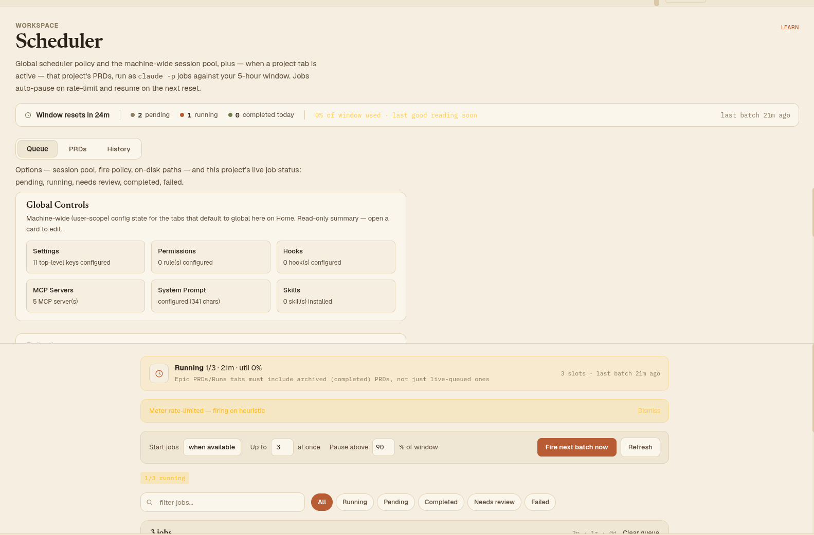

Visual reference
Screenshot of the Queue sub-tab (top of scroll), captured from the live app. Everything below the fold in this screenshot (job list, filter bar, footer) is documented in the Queue section but not pictured here.

Visual tree (top → bottom)
Header + Window Strip + Sub-tabs
Fixed chrome at the top of every sub-tab. Source: Scheduler.tsx lines 257–297; WindowStrip lines 88–186; SchedulerSubTabs.tsx.
Title block
- Tag/classes
div.text-xs.font-bold.text-fg-faint.tracking-[0.8px].uppercase→ "WORKSPACE";h1.font-serif.text-[40px].font-semibold→ "Scheduler";p.text-[14.5px].text-fg-dimsubtitle with inline<code>claude -p</code>- Content
- "Global scheduler policy and the machine-wide session pool, plus — when a project tab is active — that project's PRDs, run as `claude -p` jobs against your 5-hour window. Jobs auto-pause on rate-limit and resume on the next reset."
- Interaction
- Static text.
LearningPanel active="scheduler"renders a "LEARN" link top-right (component not detailed here — same pattern used on every tab). - States
- none
Pause banner
- Tag/classes
div—flex items-center gap-3 border rounded-xl px-4 py-2.5 text-[13px]; tone classbg-red-950/60 border-red-700/50 text-red-200(auth/network reasons) orbg-amber-950/60 border-amber-700/50 text-amber-200(rate_limit/manual)- Content
- Reason-specific text via
pauseMessage(): "Scheduler paused: Claude sign-in expired or invalid. Restart the app or re-run `claude login`, then Resume." · "Paused for rate limit — resumes in {time}" · "Paused: billing endpoint unreachable for 30+ min." · "Scheduler paused manually. Click Resume to restart." - Interaction
- "Resume" button,
onClick → window.api.schedule.resume() - States
- Only rendered when
snapshot.pausedis truthy; color/urgency differs by pause reason
Stats row
- Tag/classes
div.flex.items-center.gap-5.flex-wrap.bg-bg-hi.border.border-line.rounded-xl.px-4.py-3- Content
- Clock icon + "Window resets in {relative}" · divider · LegendItem ×3 "{n} pending" / "{n} running" / "{n} completed today" (dot colors: fg-faint / accent / sage) · divider · "{pct}% of window used" (or stale variant with "· last good reading {ago}" in amber if polling is failing) · right-aligned "last batch {ago}"
- Interaction
- Fully read-only display; re-renders every 30s via internal timer
- States
- Job counts (pending/running/completed) are scoped to the active project tab's cwd when one is open, else machine-wide; reset countdown/utilization/last-batch always stay machine-wide
Sub-tab switcher (SchedulerSubTabs)
- Tag/classes
- Segmented pill:
div.inline-flex.gap-1.bg-bg-hi.p-1.rounded-xlcontaining 3button.px-[18px].py-[7px].rounded-[9px].text-[13.5px]; active tab getsbg-bg-elev.shadow-[inset_0_0_0_1px].font-semibold.text-fg, inactive getsfont-medium.text-fg-dim.hover:text-fg - Content
- "Queue" · "PRDs" · "History"
- Interaction
- Click sets
subViewstate, persisted tolocalStorage['sm.schedulerTab.subView'] - States
- One active at a time; comment in source explicitly says this switch is Scheduler-local and must not be reused elsewhere
Queue sub-tab
Default view. Top ~45% is a scrollable "Options" region (global machine config); below a divider is the live project job queue (SchedulePanel), independently scrollable.
Global Controls card grid SessionManagerConfig.tsx
Section heading + 6 summary cards
- Tag/classes
section.border.border-line.rounded-xl.bg-bg-hi.px-5.py-4; griddiv.grid.grid-cols-2.sm:grid-cols-3.gap-3ofbutton.text-left.border.border-line.rounded-lg.bg-bg.px-3.py-2.5.hover:border-accent- Content
- Heading "Global Controls" + desc "Machine-wide (user-scope) config state for the tabs that default to global here on Home. Read-only summary — open a card to edit." Cards: Settings ("{N} top-level key(s) configured"), Permissions ("{N} rule(s) configured"), Hooks ("{N} hook(s) configured"), MCP Servers ("{N} MCP server(s)"), System Prompt ("configured ({N} chars)" / "not set"), Skills ("{N} skill(s) installed")
- Interaction
- Each card is a button;
onClick → navigate?.(key)jumps to that Configure nav tab - States
- Summary text falls back to "loading…" / "invalid JSON" / "not configured" per card while data hydrates
Behavior / Session pool / On disk sections
Behavior — "Open to Home on launch" toggle
- Tag/classes
section.border.border-line.rounded-xl.bg-bg-hi.px-5.py-4+Togglecomponent- Content
- Heading "Behavior", desc "Cross-project app behavior, independent of any single project's config.", label "Open to Home on launch"
- Interaction
- Toggle writes
appPrefs.openToHomeOnLaunch; reverts + toasts error on write failure - States
disabled={prefsSaving}while a write is in flight
Session pool — slot dots + holders
- Tag/classes
div.flex.items-center.gap-2ofspan.w-3.5.h-3.5.rounded-full.border; in-use dots getbg-accent.border-accent, free dots getbg-bg.border-line- Content
- Heading "Session pool", desc explaining the shared
SM_SESSION_SLOTSpool (default 5, range 0–10); "{inUse} / {total} in use" trailing text; optional holders list "{owner} since {time}" per active holder - Interaction
- Read-only display; polls
window.api.schedule.sessionSlots()every 5s - States
- "loading…" before first poll resolves
On disk — static path reference
- Content
- 3 monospace lines:
~/.claude/session-manager/scheduler-machine.json("policy + pause state"),<project>/session-manager-operations/scheduler/state/("per-project queue + history"),<project>/session-manager-operations/scheduler/epics/<epic>/prds/("PRD sources, per Epic") - Interaction
- None — static reference text, not clickable/copyable
Architecture summary (stub)
ArchitectureSummarySection
- Tag/classes
section.border.border-line.rounded-xl.bg-bg-hi.px-5.py-4; buttonshrink-0.px-2.5.py-1.rounded.border.border-line.text-fg-faint.text-[12px].cursor-not-allowed.opacity-60- Content
- Heading "Architecture summary"; desc "An agent-generated overview of how the scheduler pieces fit together — reconcile loop, queue/history shards, boot reconciliation, the dead-process reaper. Not generated yet."; button "Generate summary"; footer "No summary generated yet." (italic)
- Interaction
- Button is permanently
disabled— feature not wired to a backend yet (reserved slot per source comment) - States
- Always disabled today; will eventually run a cost-gated
claude -ppass, cached to disk
Status banner (FireStatus) SchedulePanel.tsx
Live scheduler-state banner
- Tag/classes
div.flex.flex-wrap.items-center.gap-3.px-4.py-3.rounded-xl.border, tone viastatusBannerClassAlmanac(kind): running →bg-amber-400/10 border-amber-400/25, paused →bg-amber-500/10 border-amber-500/25, auto-throttled →bg-amber-500/5 border-amber-500/15, elsebg-bg-elev border-line. Icon tilew-[38px] h-[38px] rounded-[10px]- Content
- Bold leading mode word (Running/Paused/Manual/On-reset/Auto) + subtitle examples: "Running 1/2 · 2/4 parallel · 1m30s", "Paused — tokens exhausted", "Manual · 3 pending", "fires 3:45 PM (in 12m)", "No work queued". Right-aligned "{cap} slots · last batch {ago}"
- Interaction
- Conditional action button (paused/manual kinds only): "Resume" (
schedule.resume()) or "Fire next batch now" (forceTick()) - States
- 5 mutually exclusive "kind" states drive color + copy + whether the action button shows at all
Meter rate-limited banner (conditional)
- Tag/classes
div.flex.items-center.justify-between.gap-3.px-4.py-3.bg-amber-400/15.border.border-amber-400/30.rounded-xl- Content
- "Meter rate-limited — firing on heuristic"
- Interaction
- "Dismiss" button — session-only, does not persist across reload
- States
- Shown only when
consecutiveFailures > 5 && lastFailureKind === 'meter_rate_limited' && !paused && !dismissed
PolicyBar (fire-policy controls)
Start jobs — fire policy select
- Tag/classes
select.appearance-none.border.border-line.bg-bg-hi.rounded-lg.px-2.5.py-1.5.text-[13px].font-medium- Content
- Label "Start jobs"; options "when available" / "only on reset" / "manually" (values
when-available/on-reset/manual) - Interaction
onChange → window.api.schedule.setConfig({firePolicy})- A11y
- Tooltip explains each mode's semantics
Concurrency cap — "Up to N at once"
- Tag/classes
input[type=number][min=1][max=20].w-11.text-center.border.border-line.bg-bg-hi.rounded-lg.py-1.5.font-mono.text-[13px]; conditional "env" pin badgespan.text-[10px].uppercase.text-amber-400/90.bg-amber-400/10.border.border-amber-400/30.rounded.px-1.5.py-0.5- Content
- Label "Up to" … "at once"; badge text "env" when pinned
- Interaction
onChange → setConfig({concurrencyCap})- States
disabledwhen pinned viaSM_SCHEDULER_MAX_CONCURRENCYenv var (tooltip explains why)
Utilization threshold — "Pause above N%" (conditional)
- Tag/classes
input[type=number][min=0][max=100], same visual family as concurrency input- Content
- Label "Pause above" … "% of window"
- Interaction
onChange → setConfig({utilizationThreshold})- States
- Only rendered when
firePolicy === 'when-available'(the default) — disappears entirely for the other two modes
"Fire next batch now" / "Refresh" buttons
- Tag/classes
- Primary:
button.bg-accent.text-white.rounded-lg.px-4.py-2.text-[13px].font-semibold.disabled:opacity-40. Secondary:button.bg-bg-hi.border.border-line.text-fg-dim.rounded-lg.px-3.5.py-2.text-[13px] - Content
- "Fire next batch now" · "Refresh"
- Interaction
- Fire →
forceTick()+ toast (bypasses billing-usage poll). Refresh →schedule.rescan()(re-scans prds/ folder on disk) - States
- Fire button
disabledwhenpending===0 && running===0
Filter bar
Search input + status pills
- Tag/classes
input[type=text].w-full.bg-bg-hi.border.border-line.rounded-xl.py-2.pl-9.pr-3.text-[13.5px]with leading search icon; pills via sharedFilterPillscomponent- Content
- Placeholder "filter jobs…"; pill labels All / Running / Pending / Completed / Needs review / Failed
- Interaction
- Text input filters by title/slug/project in-memory (not persisted); pill selection persists to
localStorage['sm.scheduler.queueFilter'] - A11y
aria-label="Filter jobs by title, slug, or project"- States
- Bar only renders when
jobs.length > 0
Job table
Table header row
- Content
- "{N} job(s)" · counts summary "{p}p · {r}r · {d}d" (+ "· {f}f" in accent color if failures exist)
- Interaction
- "Clear completed" (conditional) — hides completed/failed rows client-side only (localStorage), queue.json untouched. "Clear queue" —
window.confirm()then archives every non-running PRD toprds-archived/<timestamp>/and removes from queue;disabledif everything is running
JobRow (repeated per job, accordion) shared shape w/ HistoryRow
- Tag/classes
- Clickable row:
button[data-job-row][data-job-index].w-full.text-left.grid.grid-cols-[116px_1fr_auto_auto].gap-4.px-[18px].py-3.5.hover:bg-bg/40,aria-expanded, opens as accordion - Content
- Col 1:
SchBadge. Col 2: title (+ optionalPrdNumberBadge) + error/verdict note line +EpicTagchip. Col 3:ProjectTag. Col 4: trailing timing text ("{elapsed} elapsed" / "took {dur}" / "~{eta}") + rotating chevron - Interaction
- Click toggles expand; keyboard ArrowUp/ArrowDown roving focus across rows (persisted focus index)
- States
- Thin animated progress bar shown only for running+collapsed rows; expanded panel shows 4
DetailBlockcolumns (Status/Timing/Location/Actions) with row actions "view epic →", "view log →", "reset to pending →" each conditionally rendered - A11y
data-testid="job-row-prompt-session-chip"/"job-row-prompt-session-link"on the Epic chip/link;aria-label= "PRD {n}, {title}, {status}"
"+N more completed" collapse toggle
- Content
- "▾/▸ {N} more completed · fresh & capped at 5 shown inline"; optional inline "un-hide" link when rows are locally hidden
- Interaction
- Toggles
showAllCompleted; un-hide clears the hidden-slugs set
Footer + collapsible diagnostics
Footer bar
- Content
- "reset {relative}" · "last run {relative} ago" · links "supervisor" (switches to SupervisorPanel view) and "folder" (opens prds/ folder on disk)
SchedulerHealthSection (collapsible)
- Tag/classes
div.text-[9px].text-fg-faint— smallest text size on the entire screen- Content
- Toggle text "scheduler health" / "scheduler health · {N} failures" / "scheduler health · paused"; expanded: boot time, last poll status, failure count, retry countdown, cached reset time, currently-running slugs+pids
QueueHealthSection (collapsible PRD lint)
- Content
- "queue health · all clear ({N} scanned)" or "· {E} error(s), {W} warn(s)"; per-finding lines "✗ L{line}: {snippet}" (red) / "⚠ ..." (amber); "rerun" link to re-lint on demand
- Interaction
- Static lint of queued PRDs for unbounded loops / missing frontmatter etc.
SupervisorPanel (alternate full view, replaces queue list)
- Content
- "← queue" back link · "Supervisor" label · "refresh" link · Config row (enabled checkbox, interval/probes/stale number inputs) · "Recent probes (last {N})" log list, each row a colored pill (verdict) + slug + optional kill action + cost + reason text
- Interaction
- Config inputs write live to supervisor settings; this entire panel replaces the job queue view rather than appearing alongside it
PRDs sub-tab
Source: tabs/plans/SchedulerPrdsView.tsx. Two mutually exclusive views: card list (default) vs. full-body editor (on selecting a PRD).
Card-list header + "+ New PRD"
- Tag/classes
- Button
shrink-0.bg-accent.text-white.rounded-[9px].px-4.py-[9px].text-[13.5px].font-semibold - Content
- Desc: "PRDs are the source the scheduler runs from. Each one becomes a `claude -p` job when you queue it. This is where you write and edit the source — to watch a run in progress, use the Queue tab." Button "+ New PRD"
- Interaction
- Creates
new-prd-{timestamp}.mdfrom a template and opens it directly in the editor
Bulk-select action bar (conditional)
- Content
- "{N} selected" · Archive… · Retag… · Clear buttons
- States
- Only shown once ≥1 card is checkbox-selected
PRD card
- Tag/classes
div.flex.items-stretch.bg-bg-elev.border.border-line.rounded-[13px]with checkbox column, main content, action column- Content
- Optional
PrdNumberBadge, title (as clickable button),PrdStatusPill, meta row (ProjectTag,EpicTag, estimate minutes, parallel group, "edited {relative}"), slug link, conditional needs-review block with verdict text + "Re-fire" button - Interaction
- Title/slug both open the editor. Action column: "Queue job"/"Running…" button,
disabledwhile running, callsschedule.runNow()
Full-body editor toolbar
- Content
- "← PRDs" back link · slug (mono) ·
PrdStatusPill· toolbar buttons Reset (disabled unless failed), Run now, Hide log / Last run log (label toggles) - Interaction
- Each toolbar button (
TBtnhelper) wraps aTooltip; below the toolbar is a sharedEditorView(frontmatter + markdown body editor, not detailed here) and an optional log drawer with a raw<pre>log dump
ArchiveConfirmModal / RetagModal
- Content
- Archive: "Move {N} PRD(s) to prds-archived/<timestamp>/? Files are renamed, never deleted." Retag: numeric fields "parallelGroup:" and "estimateMinutes:" (blank = unchanged), inline validation errors, footer "Cancel" / "Archive {N}" / "Retag {N}"
- Interaction
- Modal confirm buttons disabled while
busyor count is 0; retag logs every change toretag-log.jsonlfor reversibility
History sub-tab
Source: tabs/plans/SchedulerHistoryView.tsx. Read-only browse of the last 50 completed/failed jobs.
Filter bar
- Content
- Status pills All / Completed / Failed · project
<select>("All projects" + one option per project) · "from"/"to"<input type=date>pair · result count "{filtered}/{total}" · "clear" link (conditional, resets all 4 filters)
HistoryRow (accordion) same shape as JobRow
- Content
- Identical visual language to JobRow:
SchBadge, title + error line,EpicTag,ProjectTag, duration + chevron; expanded panel with Status/Timing/Location/ActionsDetailBlockcolumns — but dates shown as absolute locale strings rather than relative ("started"/"finished" here vs. live-elapsed in Queue) - Interaction
- "view log →" and "reset to pending →" actions, both
stopPropagationso they don't also toggle the row
All interactive elements (flat index)
| Label | Type | Sub-tab | Action | Enabled when |
|---|---|---|---|---|
| Resume | button | Queue (banner) | schedule.resume() | paused |
| Fire next batch now | button | Queue (status banner) | forceTick() | kind is paused/manual |
| Dismiss | button | Queue (meter banner) | local dismiss, session-only | meter rate-limited banner visible |
| Start jobs (select) | select | Queue (PolicyBar) | setConfig(firePolicy) | always |
| Up to N at once (input) | number input | Queue (PolicyBar) | setConfig(concurrencyCap) | not env-pinned |
| Pause above N% (input) | number input | Queue (PolicyBar) | setConfig(utilizationThreshold) | firePolicy === when-available |
| Fire next batch now | button | Queue (PolicyBar) | forceTick() | pending or running > 0 |
| Refresh | button | Queue (PolicyBar) | schedule.rescan() | always |
| Filter jobs (search) | text input | Queue | in-memory text filter | jobs.length > 0 |
| All/Running/Pending/Completed/Needs review/Failed | pill group | Queue | status filter, persisted | jobs.length > 0 |
| Clear completed | button | Queue (job table) | hide completed rows locally | ≥1 inline completed row |
| Clear queue | button | Queue (job table) | archive non-running PRDs, confirm() dialog | ≥1 non-running job |
| JobRow (each) | button/accordion | Queue | expand/collapse detail | always |
| view epic → | button | Queue (job detail) | navigate to Epic's terminal tab | job has linked promptSession |
| view log → | button | Queue/History (job detail) | open RunLogViewer | job.runId set |
| reset to pending → | button | Queue/History (job detail) | schedule.resetJob(slug) | status not pending/running |
| +N more completed | button | Queue (job table) | toggle showAllCompleted | collapsedCount > 0 |
| un-hide | link | Queue (job table) | clear hidden-slugs set | hiddenSlugs.size > 0 |
| supervisor | link | Queue (footer) | switch to SupervisorPanel view | always |
| folder | link | Queue (footer) | schedule.openFolder() | always |
| scheduler health (toggle) | button | Queue | expand/collapse diagnostic panel | health data loaded |
| queue health (toggle) / rerun | button | Queue | expand/collapse lint results / re-lint | always |
| ← queue | button | Queue (Supervisor view) | back to job list | always |
| refresh | button | Queue (Supervisor view) | reload probe log | always |
| enabled / interval / probes / stale | checkbox + number inputs | Queue (Supervisor view) | write supervisorConfig | always |
| Global Controls cards ×6 | button | Queue (SessionManagerConfig) | navigate to Configure tab | always |
| Open to Home on launch | toggle | Queue (SessionManagerConfig) | write appPrefs | not currently saving |
| Generate summary | button | Queue (Architecture summary) | none (stub) | never — permanently disabled |
| + New PRD | button | PRDs | create + open new PRD file | always |
| Archive… / Retag… / Clear | button | PRDs (bulk bar) | open modal / clear selection | ≥1 checked |
| PRD title / slug (each card) | button | PRDs | open full-body editor | always |
| Re-fire | button | PRDs (needs_review card) | schedule.resetJob(slug) | status === needs_review |
| Queue job / Running… | button | PRDs (card action col) | schedule.runNow() | disabled while running |
| ← PRDs | button | PRDs (editor toolbar) | close editor | always |
| Reset | button | PRDs (editor toolbar) | reset failed job to pending | status === failed |
| Run now | button | PRDs (editor toolbar) | runNow() | always |
| Hide log / Last run log | button | PRDs (editor toolbar) | toggle log drawer | always |
| Cancel / Archive N / Retag N | button | PRDs (modals) | confirm bulk action | not busy, count > 0 |
| All / Completed / Failed | pill group | History | status filter | always |
| Project (select) | select | History | filter by project | ≥1 project present |
| from / to (date) | date input ×2 | History | date-range filter | always |
| clear | link | History | reset all filters | any filter active |
| HistoryRow (each) | button/accordion | History | expand/collapse detail | always |
Known issues / design flags — why this screen reads as "weird"
Concrete complaints for the designer to react to, not a wishlist of new features. Anything not listed here should be assumed intentional and worth preserving.
- visual noise The Queue sub-tab stacks 7 distinct card-like sections in one vertical scroll before you ever see a job (Global Controls grid, Behavior, Session pool, On disk, Architecture summary stub, status banner, PolicyBar) — a brand-new user has to scroll past all of it to find "did my job run." Nothing here signals which block is "config you set once" vs. "live state you check often."
- visual noise Font sizes range from
text-[9px](SchedulerHealthSection, QueueHealthSection) up totext-[40px](H1) with at least 14 distinct sizes in between (10, 10.5, 11, 11.5, 12, 12.5, 13, 13.5, 14, 14.5, 15, 17, 18) — no clear type scale, so density and hierarchy feel arbitrary rather than designed. - inconsistency Two different "status pill" systems exist for overlapping meaning:
SchBadge(Queue/History rows) andPrdStatusPill(PRDs cards/editor) use different color palettes and shapes for states that are often the *same underlying job* (e.g. a running job is an accent-filled rounded-lg pill in Queue but a butter-tinted rounded-full pill in PRDs). A user moving between sub-tabs has to re-learn the color language. - inconsistency Border radius varies without an apparent system:
rounded,rounded-lg,rounded-xl,rounded-[9px],rounded-[10px],rounded-[13px],rounded-[14px],rounded-2xl,rounded-fullall appear across cards/buttons/pills in this one tab. - inconsistency "Queue", "PRDs", "History" as tab names don't map cleanly to what a new user is looking for ("is my thing running?" / "what did I write?" / "what happened before?") — the mental model (operate vs. author vs. audit) is explained only in a source code comment, never surfaced in the UI itself.
- terminology overload A first-time user hits, within the first screenful: PRD, Epic, parallel group, fire policy, concurrency cap, utilization threshold, session pool, 5-hour window, supervisor probes, queue health lint — ~10 domain terms with zero inline definitions or a glossary affordance.
- inconsistency Two nested "collapsible diagnostic" patterns (SchedulerHealthSection, QueueHealthSection) sit directly below the footer using near-invisible 9px text and a bare ▾/▸ glyph as the only affordance — easy to miss entirely, and visually they read as debug output rather than product UI.
- inconsistency The "Clear completed" vs. "Clear queue" buttons sit 2px apart with near-identical label text and styling but very different blast radius (one is a client-side hide, the other archives files to disk) — a misclick risk with no visual weight difference to signal "this one is bigger."
- dead weight "Generate summary" (Architecture summary section) is a permanently-disabled button shown to every user on every load — an unfinished feature stub occupying prime real estate above the actual job queue.
- works well, keep The JobRow/HistoryRow accordion pattern (badge · title · project tag · timing, expand for 4-column detail) is consistent, information-dense, and reused correctly in 2 of 3 sub-tabs — a good foundation to keep, not replace.
- works well, keep The window-resets/pending/running/completed status strip at the very top is a clear, glanceable "is everything OK" summary — the redesign should preserve an equivalent always-visible strip.
- works well, keep Read-only "on disk" path reference and the session-pool slot visualization are genuinely useful power-user context — don't strip these for simplicity, just consider whether they need to be this prominent for a first-time user.